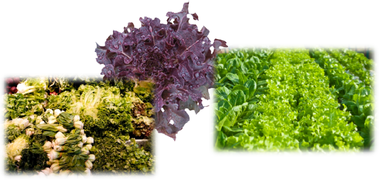
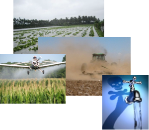
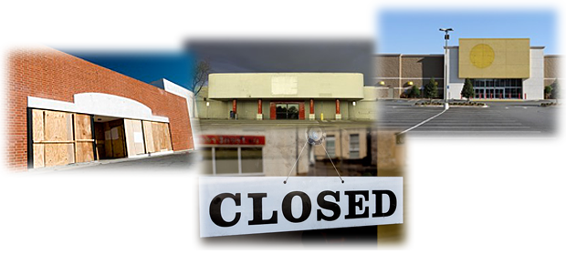

-

Welcome
-


Our Mission
It is City Gardens’ vision to provide a business model whereby access to 100% organically grown, highly nutritious food is increased and readily available to a larger portion of the existing market, but also to those not currently able to afford the better quality organic foods despite their desire.
City Gardens will resurrect inactive commercial property and downtown areas creating Green Energy Positive Buildings, improving the local infrastructure. We can provide quality organic produce foods for other local Restaurants, Hospitals, Schools and Homeless Shelters.
We believe this small vision can be brought into larger, clearer focus and accomplished by overcoming the current prohibitive high costs of production and logistics. In doing so, we can also alleviate growing fears over pesticide usage and food borne diseases.
Our Solution
Our business model removes the two primary expense and cost factors of organically grown produce, which are logistics and uncontrolled variables associated with outdoor growing practices. Specifically, the costs for trucking/ shipping and those costs involved to grow marketable pesticide free produce. Current costs for such production is very high due to the enormous volumes of water required for outdoor farming, and higher costs of tending plants in the war on pests and vermin.
Outdoor Farming
In the case of organic produce grown outdoors, 70% of what is grown is not “saleable” to the American people. Getting that marketable 30% shipped to markets is sustaining the high costs. The costs for shipping, trucking and fuel for so little are expensive, therefore the price for these products are much higher. The average cost for organic produce over conventional farming methods is 85% more for the organics. We can do better.
Local Means Really Local
Our simple strategy of grow it locally indoors, sell it locally indoors, removes these issues.
Thereby, creating non-exportable American jobs, sustainable American products, and making substantial contributions to the overall improvement of the local community infrastructure wherever the business is established.
We can create sustainable jobs and possibly places to live for those willing to work and in need of a fresh start, all within one building. We will be especially supportive of hiring Disabled Veterans and their Families, Retired Veterans, Seniors, Women in Distress, and those whom are Economically Disadvantaged.
“Where there is no vision, the people perish” (Pro. 29:18)
The lingering recession and its effects can be seen everywhere. Across this great country, there are too many inactive commercial buildings in city downtowns and in office and industrial parks.
New Americanism
Our City Gardens method creates also, sustainable industry and stimulating new commerce, as well as, some 100 new sustainable jobs with each new full installation. And most importantly, these are jobs that cannot be exported. In these ways, we look to revitalize American jobs, American Pride, American infrastructure, and American Business.
Our Community
In response, City Gardens proposes to aide in revitalizing these areas with organic food restaurants and farmer’s market combination store fronts. These “Store Fronts” will be supplied by our offsite growing facilities strategically placed no more than 5 miles away. This scenario will allows us to supply four “Store Fronts” plus 28 other local eateries at a savings that will greatly benefit their bottom line.
